3. Diagramas de interacción¶
Descarga de diapositivas
Los diagramas de interacción muestran cómo se comunican los objetos de un sistema al ejecutar una operación o proceso. Dentro de esta familia hay dos tipos principales, y los dos representan lo mismo pero desde ángulos diferentes:
| Diagrama | Énfasis |
|---|---|
| Secuencia | El orden cronológico de los mensajes (quién llama a quién y cuándo) |
| Comunicación | Las relaciones entre los objetos y el flujo de control |
Recuerda
Si lo que más importa es ver el orden exacto de los pasos, usa el de secuencia. Si lo que interesa es ver qué objetos están relacionados y cuántos mensajes hay entre ellos, usa el de comunicación. Como contienen la misma información, al final de esta página verás cómo pasar de uno a otro de forma mecánica.
3.1 Diagrama de secuencia¶
¿Para qué sirve?¶
Un diagrama de secuencia representa visualmente la interacción entre objetos a lo largo del tiempo. El eje vertical es el tiempo (de arriba abajo) y el eje horizontal muestra los objetos que participan.
Es útil para diseñar cómo deben comunicarse los objetos de un sistema al ejecutar un caso de uso concreto. Antes de despiezar la notación, mira uno entero — un inicio de sesión — para hacerte la idea general:
sequenceDiagram
actor Usuario
Usuario->>Web: iniciarSesion(usuario, clave)
activate Web
Web->>BD: comprobarCredenciales(usuario, clave)
activate BD
BD-->>Web: correctas
deactivate BD
Web-->>Usuario: mostrarPantallaPrincipal()
deactivate WebSe lee de arriba abajo: el usuario llama a la web, la web pregunta a la base de datos y espera (su barra sigue abierta), la base de datos responde (flecha discontinua) y, solo entonces, la web responde al usuario. Cada pieza de este dibujo tiene nombre propio; vamos con ellas.
Elementos del diagrama¶
Objetos¶
Representan las entidades que interactúan: pueden ser instancias de clases, actores externos o el propio sistema. Se colocan en la parte superior, alineados horizontalmente.
En DIA — añadir un objeto
Usa el elemento UML - Object de la paleta UML (el rectángulo con el nombre subrayado).
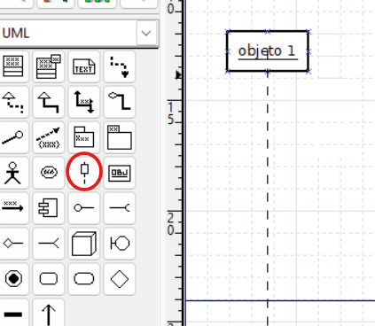
Línea de vida¶
Línea vertical discontinua que desciende desde cada objeto. Representa su existencia a lo largo del tiempo.
Activación¶
Barra rectangular sobre la línea de vida. Indica que el objeto está activo procesando una acción en ese momento.
En DIA — añadir activación
Usa el elemento de activación de la paleta UML (barra rectangular).
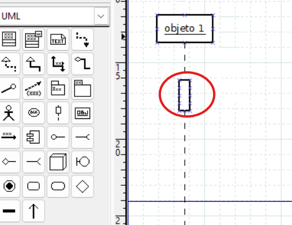
En DIA — desactivar la activación
Si quieres que la línea de vida aparezca sin la barra de activación, haz doble clic sobre la línea de vida → cambia "Dibujar foco de control" a No.
Si la línea de vida queda con los puntos de conexión muy separados, haz clic derecho sobre ella → "Reducir la distancia entre los puntos de conexión".
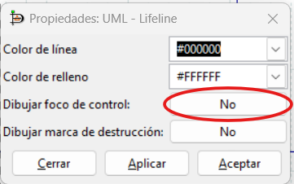
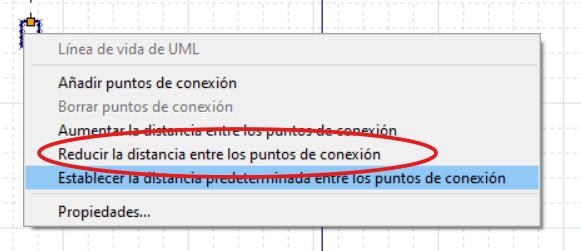
Mensajes¶
Flechas horizontales que van de un objeto a otro. Representan llamadas a métodos o envío de información. Hay varios tipos:
| Tipo | En DIA | Descripción |
|---|---|---|
| Síncrono | Llamada | El objeto que llama se detiene hasta recibir respuesta |
| Asíncrono | Simple | El objeto que llama continúa sin esperar respuesta |
| Respuesta | Volver | Respuesta a un mensaje (normalmente se omite en síncronos) |
| Creación | Crear | Instancia un nuevo objeto (equivale a un constructor) |
| Destrucción | Destruir | Elimina un objeto; aparece con una ✕ al final de su línea de vida |
| Automensaje | Recursiva | Una llamada recursiva o a otro método del mismo objeto |
Cuidado
Un mensaje de creación siempre apunta a un objeto, nunca a una clase.
En DIA — cambiar el tipo de mensaje
Dibuja la flecha entre dos objetos con la herramienta de mensajes de la paleta UML y luego haz doble clic sobre ella. En el diálogo Propiedades: UML - Message, cambia el campo "Tipo de mensaje" al que necesites.
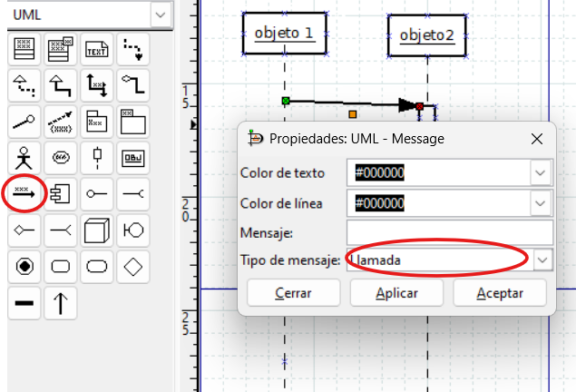
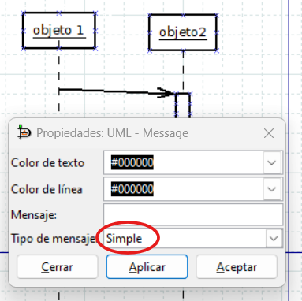
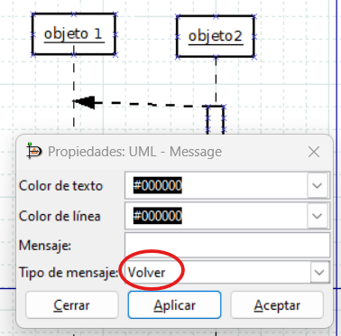
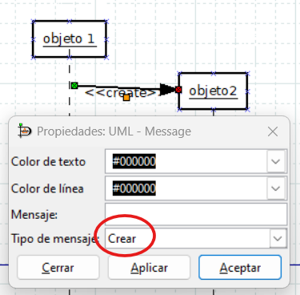
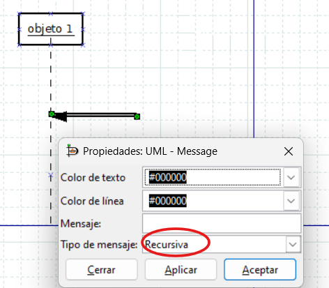
En DIA — añadir la marca de destrucción (✕)
Para que aparezca la ✕ al final de la línea de vida de un objeto que se destruye, haz doble clic sobre su línea de vida → activa "Dibujar marca de destrucción" → Sí. El tipo del mensaje que lo destruye debe ser Destruir.
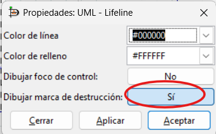
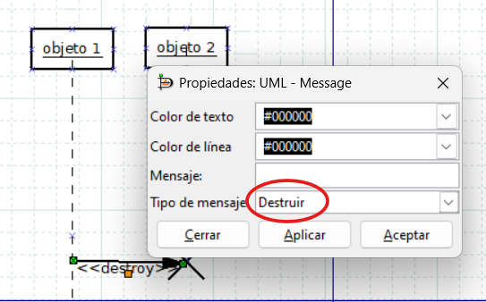
Para saber más — no entra en examen ni actividades
Fragmentos combinados
Permiten expresar lógica de control encerrando mensajes en un marco con una etiqueta en la esquina.
| Etiqueta | Equivalente | Uso |
|---|---|---|
loop |
while / for |
Repite los mensajes del interior |
alt |
if/else |
Alternativa: las ramas se separan con línea horizontal |
opt |
if sin else |
Los mensajes se ejecutan solo si se cumple la condición |
break |
break |
El fragmento se ejecuta y la secuencia principal se interrumpe |
par |
hilos | Los mensajes del interior se ejecutan en paralelo |
En general, si el diagrama necesita muchos fragmentos anidados es mejor separarlo en varios diagramas más simples.
Resumen de tipos de mensaje¶
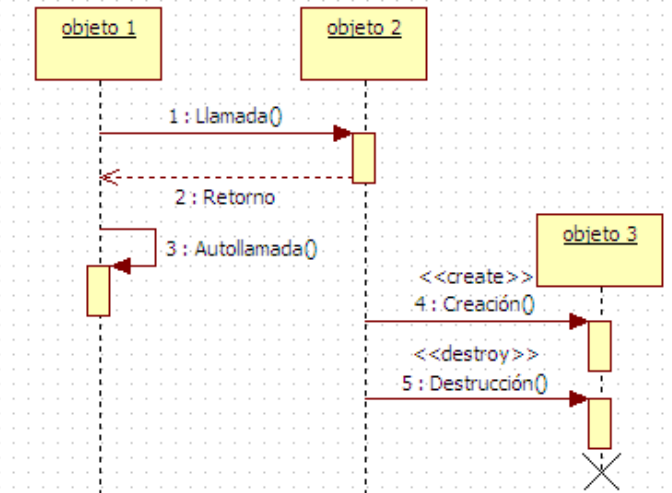
Ejemplo leído paso a paso: llamada telefónica¶
Saber dibujar no basta: hay que saber leer un diagrama de secuencia como si fuera una historia. Este representa a un vendedor que llama a un abonado a través de la empresa de telefonía:
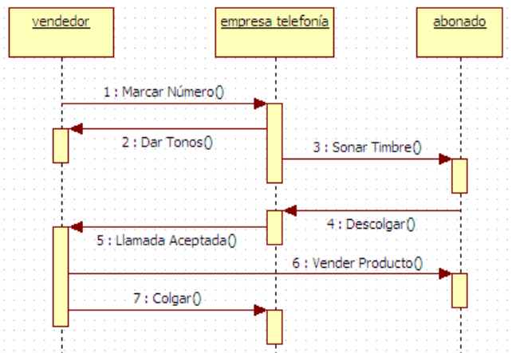
Léelo de arriba abajo, que es como avanza el tiempo:
Marcar Número(): el vendedor llama a la empresa de telefonía. La activación de la centralita se abre: está procesando.Dar Tonos(): la empresa responde al vendedor con los tonos de espera. Fíjate en que el vendedor los recibe mientras la centralita sigue activa.Sonar Timbre(): a la vez, la empresa hace sonar el teléfono del abonado: se abre la activación del abonado.Descolgar(): el abonado responde descolgando; el mensaje viaja de vuelta hacia la empresa.Llamada Aceptada(): la empresa avisa al vendedor de que ya hay línea.Vender Producto(): ahora sí, el vendedor habla directamente con el abonado: es el único mensaje que no pasa por la empresa.Colgar(): el vendedor termina la llamada avisando a la empresa.
Recuerda
Al interpretar un diagrama de secuencia, pregúntate en cada mensaje: ¿quién lo envía?, ¿el emisor espera respuesta o continúa?, ¿qué activaciones están abiertas en ese momento? Es exactamente lo que se pide en las actividades de este tema.
Ejemplo: lavadora¶
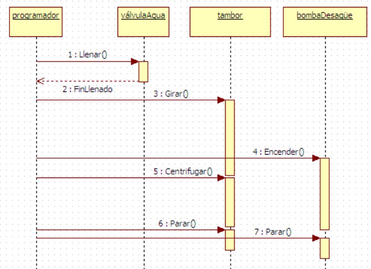
3.2 Diagrama de comunicación¶
¿Para qué sirve?¶
El diagrama de comunicación (llamado "de colaboración" en versiones anteriores de UML) representa la comunicación entre objetos, poniendo el acento en las relaciones y el flujo de control, no en el tiempo.
Idea clave
Los diagramas de secuencia y de comunicación muestran lo mismo: quién habla con quién. La diferencia es el enfoque:
- Secuencia: énfasis en el orden cronológico (eje temporal vertical)
- Comunicación: énfasis en las relaciones entre objetos (quién está conectado con quién)
Elementos del diagrama¶
Objetos (nodos de comunicación)¶
Representan las entidades del sistema, igual que en el diagrama de secuencia. En UML 2 se denominan nodos de comunicación.
Canal de comunicación¶
Cuando dos objetos se envían mensajes, se unen con una línea recta. Es el canal por el que fluyen los mensajes. El canal es único por pareja de objetos: si dos objetos se envían cinco mensajes, hay un solo canal con cinco etiquetas encima.
Mensajes¶
Se representan sobre el canal como flechas con una etiqueta: un número de secuencia que indica el orden, el nombre del mensaje (el método o acción) y la dirección mediante la punta de la flecha.
Como aquí no existe el eje vertical del tiempo, el orden se expresa solo con la numeración, y por eso importa tanto. Hay dos convenciones:
- Numeración plana:
1:,2:,3:... en el orden global de los mensajes. Es la más sencilla y suficiente en diagramas pequeños. - Numeración jerárquica: los mensajes que ocurren dentro de la operación desencadenada por otro llevan su número como prefijo: el mensaje
2:que provoca dos llamadas internas genera2.1:y2.2:.
Ejemplo de numeración jerárquica
Un usuario pulsa "Finalizar compra" en una web. El objeto Web recibe la orden y, para completarla, necesita hablar con Stock y con Pago:
flowchart LR
Usuario([Usuario]) -->|"1: finalizarCompra()"| Web([Web])
Web -->|"1.1: reservarProductos()"| Stock([Stock])
Web -->|"1.2: cobrar()"| Pago([Pago])1.1 y 1.2 cuelgan del 1 porque ambas llamadas ocurren dentro de la operación finalizarCompra(): sin el mensaje 1 no existirían. Si después el usuario pidiera la factura, ese nuevo mensaje sería el 2:.
En DIA — mensajes en comunicación
Usa la misma herramienta de mensajes que en secuencia (UML - Message). Haz doble clic → elige "Llamada" u otro tipo según corresponda.
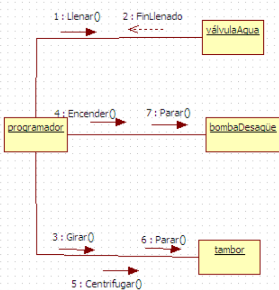
3.3 De secuencia a comunicación (y vuelta)¶
Como los dos diagramas contienen la misma información, pasar de uno a otro es mecánico:
- Coloca los objetos del diagrama de secuencia donde quieras en el lienzo (ya no importa el eje del tiempo) y une con una línea cada pareja que se envíe al menos un mensaje: esos son los canales.
- Copia cada mensaje sobre su canal, como flecha etiquetada con el nombre de la operación.
- Numera los mensajes en el orden en que ocurrían en el diagrama de secuencia, con numeración plana o jerárquica.
El paso inverso (de comunicación a secuencia) también funciona: la numeración te da el orden vertical de los mensajes.
El mismo escenario de la lavadora que has visto arriba, traducido a comunicación:
Para modelar un sistema, cualquiera de los dos es válido. En la práctica el de secuencia es más habitual, porque el orden cronológico suele ser lo que más interesa comunicar; el de comunicación gana cuando hay muchos objetos y lo que preocupa es la estructura de conexiones (por ejemplo, detectar que un objeto habla con demasiados).
3.4 Un mismo diagrama, dos vistas¶
Para terminar, compara el mismo escenario dibujado de las dos formas: el finalizarCompra() de más arriba, con sus tres mensajes numerados 1, 1.1 y 1.2.
Como secuencia — el tiempo avanza hacia abajo; se ve claramente que Web espera la respuesta de Stock antes de hablar con Pago:
sequenceDiagram
actor Usuario
Usuario->>Web: 1: finalizarCompra()
activate Web
Web->>Stock: 1.1: reservarProductos()
activate Stock
Stock-->>Web: ok
deactivate Stock
Web->>Pago: 1.2: cobrar()
activate Pago
Pago-->>Web: ok
deactivate Pago
deactivate WebComo comunicación — ya no hay eje temporal: lo que se ve son los objetos y sus canales; el orden queda solo en la numeración:
flowchart LR
Usuario([Usuario]) -->|"1: finalizarCompra()"| Web([Web])
Web -->|"1.1: reservarProductos()"| Stock([Stock])
Web -->|"1.2: cobrar()"| Pago([Pago])La diferencia, de un vistazo
Mismos tres mensajes, misma numeración. En secuencia ves el ORDEN temporal (eje vertical) y cuánto tiempo está cada objeto activo. En comunicación ves las RELACIONES (quién está conectado con quién) y el orden se lee solo en las etiquetas 1, 1.1, 1.2.